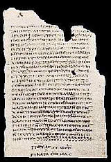
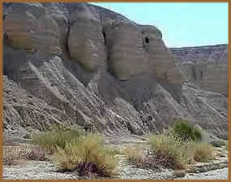
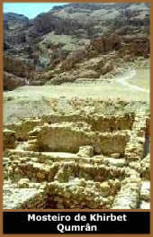

A palavra Apócrifo
vem do grego Apokryphos e significa oculto ou
não autêntico. Mas este termo é usado,
principalmente para designar os documentos do início da
era Cristã, que abordam também a vida e os ensinamentos
de Jesus,
mas não foram inclusos na Bíblia Sagrada por serem
considerados ilegítimos.
A origem dos Livros Apócrifos (também
chamados de Livros Gnósticos; do grego Gnosis,
que significa Conhecimento) nos remete ao ano 367 d.C.
Por ordem do Bispo Atanásio de Alexandria, que seguia a
resolução do Concílio de Nicéia ocorrido
em 325 d.C, foram destruídos inúmeros manuscritos
dos primórdios do Cristianismo. Esses documentos eram supostamente
fantasiosos e deturpavam as bases da doutrina Católica
que se estabelecia naquele momento. Porém, cientes da importância
histórica destes papiros originais, os Monges estabelecidos
à margem do rio Nilo, optaram por não destruí-los.
Ao contrário, guardaram os códices de papiros dentro
de urnas de argila e as enterraram na base de um penhasco chamado
Djebel El-Tarif. Ali ficaram esquecidos e protegidos por mais
de 1500 anos.
Em 1945, Mohammed Ali Es-Samman e seus irmãos,
residentes na aldeia de El-Kasr, estavam brincando próximos
ao penhasco, quando encontraram as urnas escondidas durante séculos.
Pensando que se tratava de ouro, acabaram quebrando uma das urnas,
mas só encontraram 13 códices com mais de 1000 páginas
de papiro. Decepcionados, levaram para casa, e sua mãe
chegou a usar alguns papiros para acender o fogo.
Em 1952, o museu Copta do Cairo recebeu os manuscritos
para sua guarda. Faltavam algumas páginas e um códice
fora vendido pela família de Mohammed para o Instituto
Jung, de Zurique. Esses códices passaram a ser chamados
Bíblia de Nag Hammadi, localidade onde fora encontrado
os manuscritos. Antes desta descoberta, só se conheciam
os textos Gnósticos pelas citações de outros
autores. Dos 53 textos encontrados, 40 eram totalmente desconhecidos
da comunidade científica. Estes Manuscritos foram redigidos
em Copta, antiga língua egípcia, que utilizava caracteres
gregos.
Em
1947, dois pastores descobriram em uma gruta próxima ao
Mar Morto, fragmentos e rolos escritos em hebraico. Logo se percebeu
a grandiosidade desta descoberta. Havia textos condizentes com
a Bíblia e outros textos apócrifos. A partir de
então, outras grutas foram sendo encontradas, contendo
muito material em grande parte identificado como sendo do Antigo
Testamento. Até este momento, todas as grutas encontradas
continham material escrito em hebraico e aramaico. Porém,
em 1955 foi descoberta uma gruta que continha papiros e jarros
com escrita em grego. Comprovou-se que se tratavam dos mais antigos
manuscritos já descobertos pelo homem, datados de tempos
anteriores aos dias de Cristo.
Um dos rolos, o mais conservado, apresenta uma
cópia do Livro de Isaías que, ao ser comparado
com as cópias modernas, trouxe a certeza de que não
houve nesses dois milênios, nenhuma alteração
de sua mensagem profética. Encontra-se também O
Manuscrito de Lameque, conhecido como O Apócrifo
de Gênesis, que apresenta um relato ampliado do Gênesis.
Há ainda A Regra da Guerra, que narra a grande
batalha final entre os filhos da luz e os filhos das trevas; sendo
os descendentes das tribos de Levi, Judá e Benjamim, retratados
como os filhos da luz, e os Edomitas, Moabitas, Amonitas, Filisteus
e Gregos, representados como os filhos das trevas.
Dois
anos após a primeira descoberta, foram encontradas as ruínas
do Mosteiro de Khirbet Qumran, uma propriedade dos Essênios.
Onde provavelmente teriam sido confeccionadas as cópias
das Sagradas Escrituras. Com certeza, pelo mesmo motivo que os
monges de Nag Hammadi enterraram os códices dos Evangelhos
Apócrifos, os essênios esconderam nas grutas de Qumran,
no Mar Morto.
Como vimos, foi através dessas descobertas
que atualmente temos acesso a esses livros Apócrifos que
deveriam, de acordo com a Igreja Católica, ter sido destruídos
há muitos séculos.
Não sabemos exatamente qual o critério
usado pela Igreja para designar os livros que eram apócrifos
ou canônicos (do grego Kanón - catálogo
de Livros Sagrados admitidos pela Igreja Católica).
Mas provavelmente, era apenas uma conveniência daquela época.
O mais interessante, é que a própria Igreja Católica
reconhece que muitos desses textos foram escritos por autores
sagrados. E por que então não reconhecê-los
como canônicos? E por que tais textos foram perseguidos
e condenados durante séculos?
Atualmente, a Igreja Católica reconhece
como parte da tradição os Evangelhos Apócrifos
de Tiago, Matheus, O Livro sobre a Natividade de Maria, o Evangelho
de Pedro e o Armênio e Árabe da Infância de
Jesus. Mas a maioria dos livros não é reconhecida.
Ao todo são 112 livros, 52 referentes ao Antigo Testamento
e 60 em relação ao Novo Testamento. Dentre eles
estão Evangelhos (como o de Maria Madalena, Tomé
e Filipe), Atos (como o de Pedro e Pilatos), Epístolas
(como a de Pedro à Filipe e a Terceira Epístola
aos Coríntios) e Apocalipses (como de Tiago, João
e Pedro) Testamentos (como de Abraão, Isaac e Jacó).
Além de A Filha de Pedro, Descida de Cristo
aos Infernos, etc.
Diante de tudo isso, é difícil compreender
como é possível um livro considerado sagrado, ser
além de escrito, formulado pelos homens conforme suas idéias
retrógradas e conveniências políticas e sociais.
É apenas mais um motivo para se contestar a Antiga Igreja
Católica, já tão bem conhecida pela sua "Autoridade
Divina".
Por
Spectrum